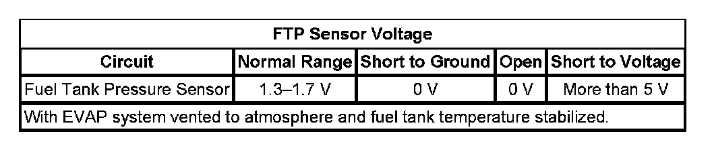

P0453
DTC P0451, P0452, P0453, or P0454
DTC DESCRIPTORS
DTC P0451
Fuel Tank Pressure (FTP) Sensor Performance
DTC P0452
Fuel Tank Pressure (FTP) Sensor Circuit Low Voltage
DTC P0453
Fuel Tank Pressure (FTP) Sensor Circuit High Voltage
DTC P0454
Fuel Tank Pressure (FTP) Sensor Intermittent
DIAGNOSTIC FAULT INFORMATION
Perform the Diagnostic System Check - Vehicle prior to using this diagnostic procedure. Initial Inspection and Diagnostic Overview
TYPICAL SCAN TOOL DATA
FTP Sensor Voltage:

CIRCUIT/SYSTEM DESCRIPTION
The fuel tank pressure (FTP) sensor measures air pressure or vacuum in the evaporative emission (EVAP) system. The control module supplies a 5-volt reference and a low reference circuit to the FTP sensor. The FTP sensor signal voltage varies depending on EVAP system pressure or vacuum. The controller also uses this FTP signal to determine atmospheric pressure for use in the engine-off small leak test, DTC P0442. Before using this signal as an atmospheric reference it must first be re-zeroed.
CONDITIONS FOR RUNNING THE DTC
P0451
- DTC P0451 runs only when the engine-off natural vacuum small leak test, P0442, executes.
- The number of times this test runs can range from 0-2 per engine-off period. The length of the test can be up to 10 minutes.
P0452 and P0453
DTC P0452 and P0453 run continuously when the ignition is ON.
P0454
- DTC P0454 runs only when the engine-off natural vacuum small leak test, P0442, executes.
- This test can run once per engine-off period. The length of the test can be up to 10 minutes.
- A refueling event is not detected.
CONDITIONS FOR SETTING THE DTC
P0451
This DTC will set if the controller is unable to re-zero the FTP sensor voltage within a calibrated range during the engine-off small leak test, P0442.
P0452
The FTP sensor voltage is less than 0.1 volt.
P0453
The FTP sensor voltage is more than 4.9 volts.
P0454
If, during the engine-off natural vacuum small leak test, P0442, the engine control module (ECM) detects an abrupt FTP signal change, other than a refueling event, this DTC will set. An abrupt change is defined as a change of 0.45 inch H2O in the span of 1 second.
ACTION TAKEN WHEN THE DTC SETS
P0451 and P0454
DTCs P0451 and P0454 are Type A DTCs.
P0452 and P0453
DTCs P0452 and P0453 are Type B DTCs.
CONDITIONS FOR CLEARING THE MIL/DTC
- DTCs P0451 and P0454 are Type A DTCs.
- DTCs P0452 and P0453 are Type B DTCs.
DIAGNOSTIC AIDS
- Ensure that the reference port on the FTP sensor is unobstructed.
- Scan tool output controls, snapshot, and the plot function can help detect erratic sensor operation. To observe the Fuel Tank Pressure Sensor signal under vacuum conditions, use the Quick Snapshot and the EVAP Purge/Seal function to capture data while commanding purge to 20 percent. Then plot the data to look for erratic sensor operation. A similar test can be done for the pressure side of the sensor range by applying pressure with J 41413-200 Evaporative Emission System Tester (EEST) while taking a snapshot with the scan tool.
CIRCUIT/SYSTEM VERIFICATION
1. Remove the fuel cap.
2. Ignition ON, engine OFF.
3. Observe the Fuel Tank Pressure Sensor parameter with a scan tool.
4. The FTP Sensor parameter should be 1.3-1.7 volts
CIRCUIT/SYSTEM TESTING
1. Ignition OFF, disconnect the harness connector at the FTP sensor.
2. Ignition OFF, ensure that the ECM completely powers down and test for less than 5 ohms of resistance between the low reference circuit terminal A and ground.
- If greater than the specified range, test the low reference circuit for an open/high resistance. If the circuit tests normal, replace the control module.
3. Ignition ON, test for 4.8-5.2 volts between the 5-volt reference circuit terminal C and ground.
- If less than the specified range, test the 5-volt reference circuit for a short to ground or an open/high resistance. If the circuit tests normal, replace the control module.
- If greater than the specified range, test the 5-volt reference circuit for a short to voltage. If the circuit tests normal, replace the control module.
4. Verify the scan tool FTP sensor parameter is less than 0.2 volt.
- If greater than the specified range, test the signal circuit terminal B for a short to voltage. If the circuit tests normal, replace the control module.
5. Install a 3A fused jumper wire at the signal circuit terminal B and the 5-volt reference circuit terminal C. Verify the scan tool FTP sensor voltage parameter is greater than 4.7 volts.
- If less than the specified range, test the signal circuit for a short to ground or an open/high resistance. If the circuit tests normal, replace the control module.
6. If all circuits test normal, replace the FTP sensor.
REPAIR INSTRUCTIONS
- For DTC P0452 or P0453, always perform the Diagnostic Repair Verification after completing the diagnostic procedure. Verification Tests
- For DTC P0451 or P0454, clear DTCs with a scan tool.
- Fuel Tank Pressure Sensor Replacement (1500 LWB - 117.3L (31 gal) Tank + E85) Fuel Tank Pressure Sensor Replacement (1500 SWB - 98.4L (26 gal) Tank + E85) Fuel Tank Pressure Sensor Replacement (1500 Series) Fuel Tank Pressure Sensor Replacement (2500 Series)
- Control Module References for ECM replacement, setup, and programming.